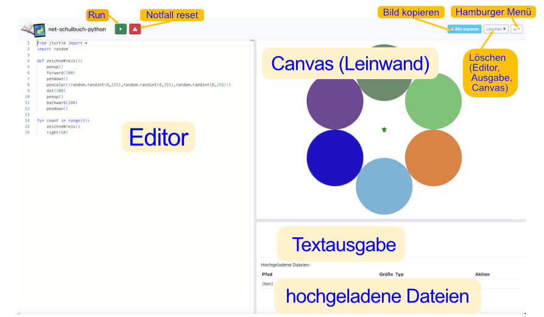
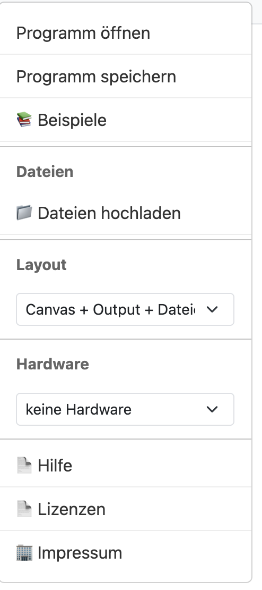

Kurzanleitung zur IDE


Über das Menü erreichst du alle erweiterten Funktionen der IDE. Es ist der zentrale Einstiegspunkt für Einstellungen und Zusatzfunktionen.
Über Menü → Layout kannst du zwischen Canvas + Output, Output + Dateien und Canvas + Output + Dateien wechseln.
Bei Problemen mit Grafik- oder Pygame-Programmen zuerst den Notfall-Reset benutzen.
Nächste Themen: Turtle · Pygame · Calliope 1/2 · Calliope 3